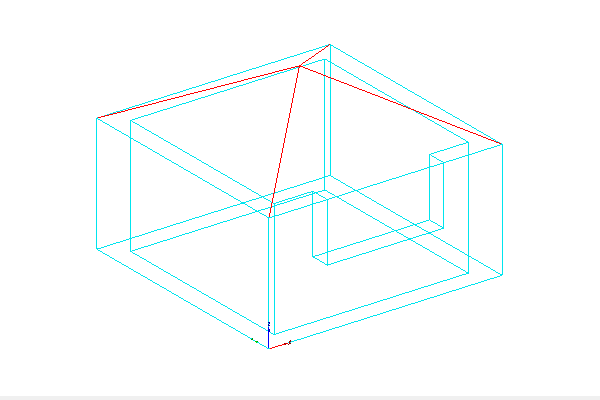

Buildings
bldg001
File Name: bldg001.gml
Description: bldg001 is a building object which has LOD0, LOD1, LOD2 and LOD3 representations as MultiSurfaces and Solids
Tags: lod0MultiSurface, lod1Solid, lod2Solid, lod3Solid
View the Building 1 in 3D Mode
bldg002
File Name: bldg002.gml
Description: bldg002 is a building object which has Boundaries (ground, roof & walls) and linked (xlink) LOD representations as solids
Tags: GroundSurface, RoofSurface, WallSurface, Xlink, lod0MultiSurface, lod1Solid, lod2Solid, lod3Solid


bldg003
File Name: bldg003.gml
Description: Bldg003 is a building object which has only LOD2 representation as Solid and consists of PolygonPatches.
Tags: PolygonPatch, lod2Solid, Building

bldg008
File Name: bldg008.gml
Description: Building 008 is a building object which has LOD3 representation as Solid and lod3 TerrainInterSection as MultiCurve. Additionally it consists of Storeys based on Solids.
Tags: lod3Solid, lod3TerrainIntersectionCurve, Building, Storey
View the Building 8 in 3D Mode
bldg009
File Name: bldg009.gml
Description: Building09 is a building object which has only LOD3 representation as MultiSurfaces with CompositeSurface elements.
Tags: CompositeSurface, lod3MultiSurface, Building


bldg010
File Name: bldg010.gml
Description: Building010 is a building object which has Boundaries and linked LOD representations and additionally rooms, windows and doors.
Tags: lod3MultiSurface, lod3Solid, Building, GroundSurface, RoofSurface, WallSurface, OuterCeilingSurface, DoorSurface, WindowSurface, FloorSurface, InteriorWallSurface, CeilingSurface, BuildingRoom